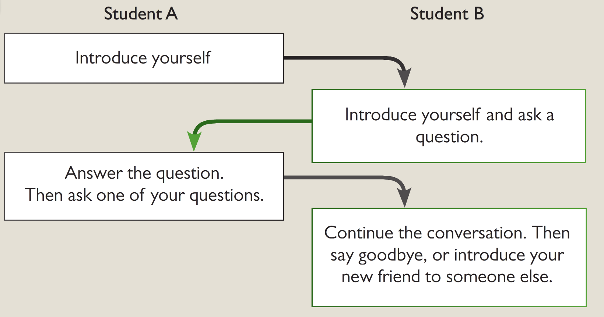

What is considered polite behavior in your culture?
How important is it to arrive on time for social events in your country?
What are some common gestures that are considered impolite in your culture?
Do you think it’s important to hold the door open for someone? Why or why not?
What are some appropriate ways to greet someone in your culture?
a I'd love a coffee, thank you.
b Oh, we work together.
c I’m an architect.
d Yes, it’s lovely.
e Yes, I'll probably see you on Wednesday.
f Yes, it was terrible. We lost 3-0.
g Hi. Nice to meet you.
h Yes, let’s keep in touch.
i Yes, it was OK. I didn’t do much.
j No, I’m just visiting.
k It was nice to meet you, too.
l Woodbridge. It’s a small town near Ipswich.
Imagine you're now at the party. Talk to as many different students as possible.
What rules of etiquette do you know in Asian countries? What didn't the man like in the video? What feelings did this behavior arouse in you? Is it important to respect the traditions and peculiarities of other countries? What does the proverb: "When in Rome, do as Romans do" mean?